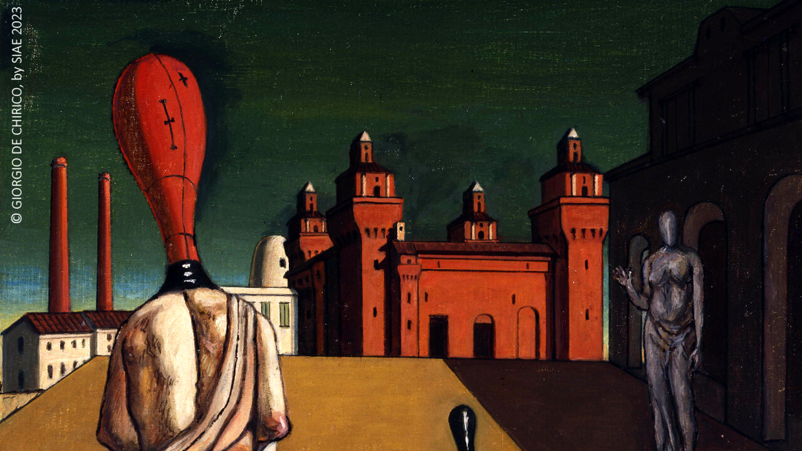
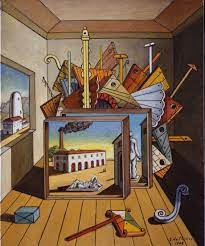
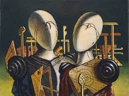
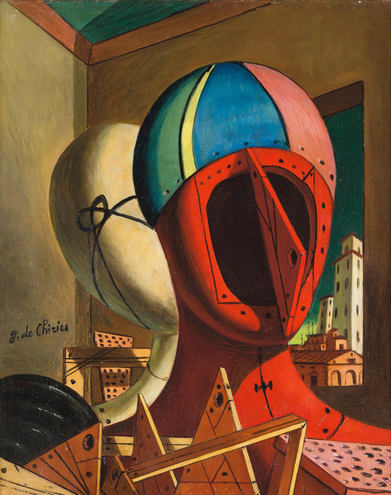
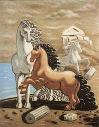
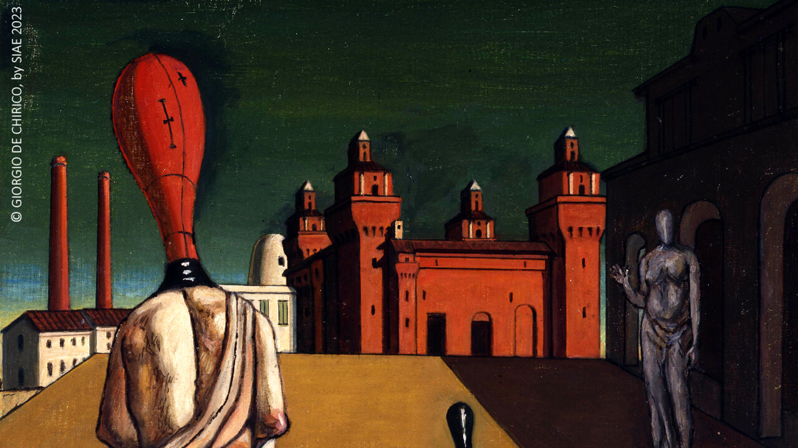
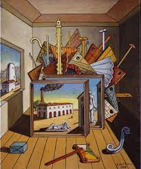
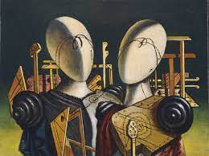
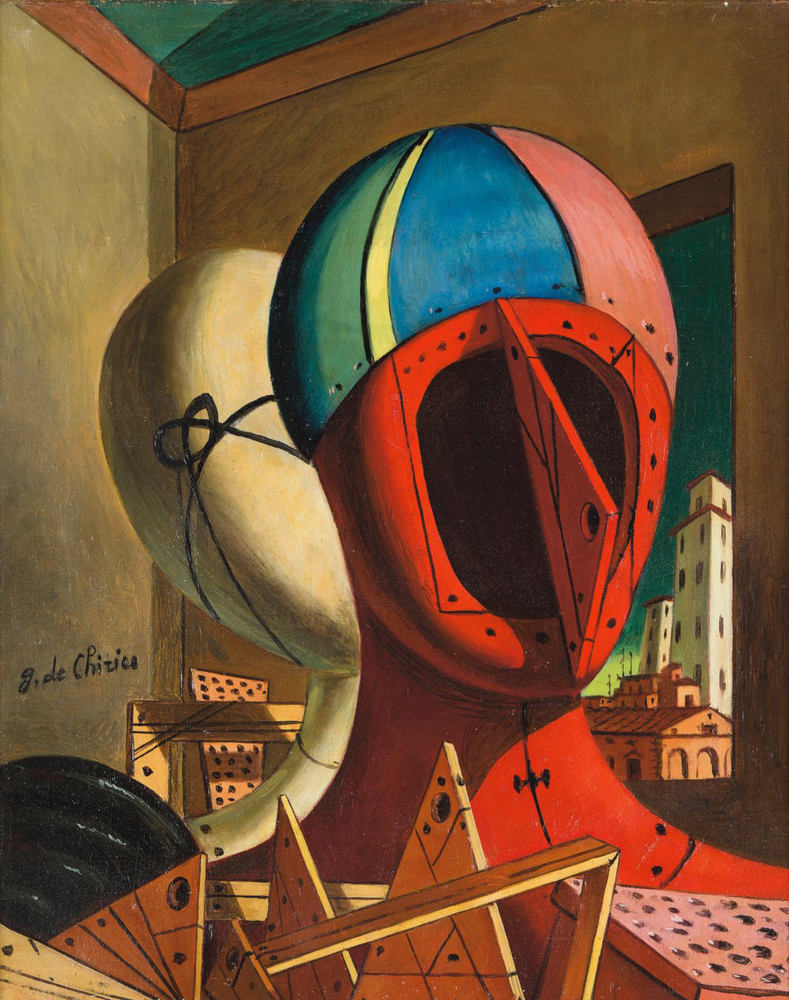
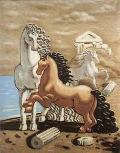

De Chirico
Giuseppe Maria Alberto Giorgio de Chirico (/ˈkɪrɪkoʊ/ KIRR-ik-oh, Italian: [ˈdʒordʒo de ˈkiːriko]; 10 July 1888 – 20 November 1978) was an Italian artist and writer born in Greece.[2][3] In the years before World War I, he founded the scuola metafisica art movement, which profoundly influenced the surrealists. His best-known works often feature Roman arcades, long shadows, mannequins, trains, and illogical perspective. His imagery reflects his affinity for the philosophy of Arthur Schopenhauer and of Friedrich Nietzsche, and for the mythology of his birthplace. After 1919, he became a critic of modern art, studied traditional painting techniques, and worked in a neoclassical or neo-Baroque style, while frequently revisiting the metaphysical themes of his earlier work. In 2018 it was suggested that de Chirico may have suffered from Alice in Wonderland syndrome.
 








